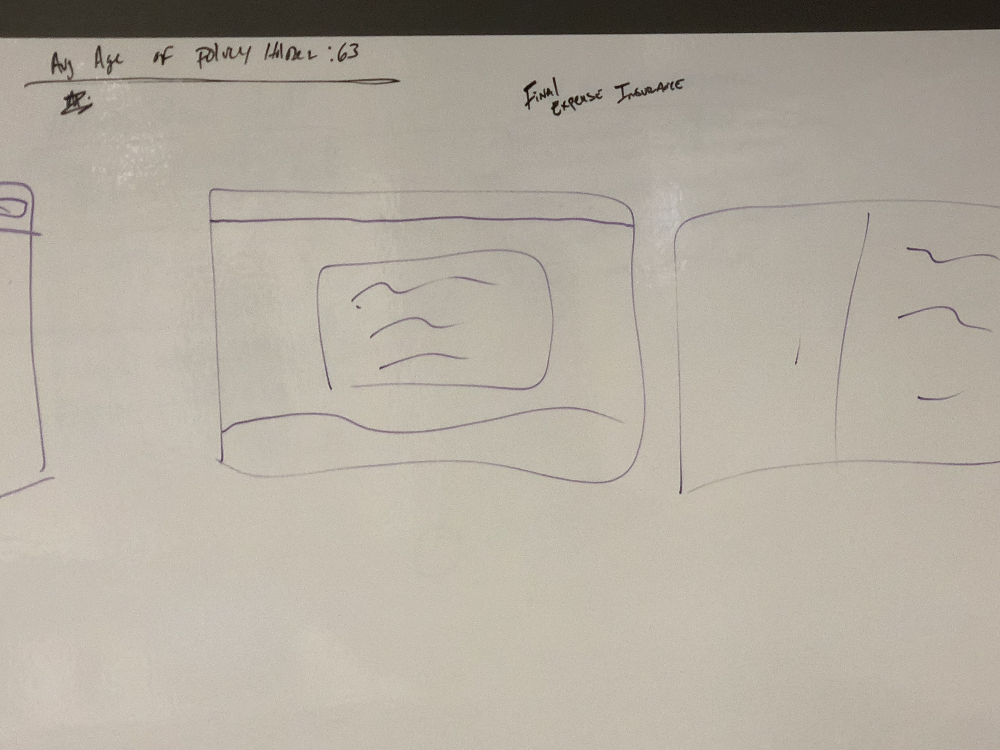
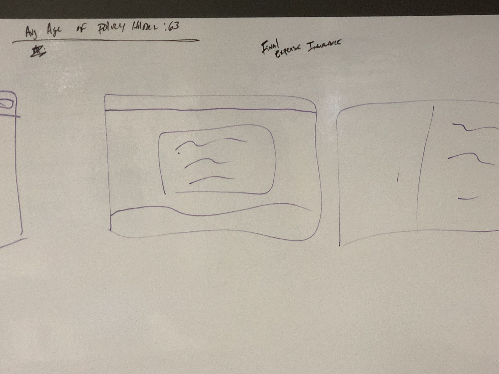

Whole Life Guaranteed Product Page
Problem
Potential customers visit the Mutual of Omaha website, after viewing a television advertisement on “Guaranteed Whole Life Insurance”.
While navigating the website, they’re having difficulty locating information on this specific product.
Discovery
User Interviews
- Allowed me to understand that they are not looking online while they are watching tv, they are looking up to a day later, in some interviews.
- Allowed me to understand that they are not drawing a correlation between the ad and the information on the website.
- Allowed me to understand what the user wanted to see information on when coming to the website
Card Sort
- Performed a card sort with 10 of the target audience for this product
- Had the testers put 28 items in three categories, matters most to me, matters somewhat to me, and does not matter to me
- Took those results and applied them to a rough hierarchy/ content architecture for the webpage
Site Analysis
- Google Analytics
- I followed the user journey inside the life insurance section of the website to determine what path they took organically, this was from the 1st of the year until the middle of May
- Onsite Search Analytics
- Using the SOLR tool I pulled the search analytics from the same time, and checked for patterns in search
- This task, proved unfruitful but still gave me a picture that the users were not using the search box on mutualofomaha.com, to find their page, but they are looking using the site navigation to get to the life section
Stakeholder Interviews
- I interviewed seven business stakeholders to determine what the business wanted to accomplish with this project, (definition of success)
- They wanted the solution to help convert people who were on the fence
- They wanted a dedicated solution to funnel people down the buying process
- They wanted a dedicated page that only gave information on one product
Tree Test
- I performed a tree test in the process of working on another solution that provided data that users of the website were unable to navigate to the life insurance section based on just text information, they were also using visual cues too
Business Intelligence
- Based on the segmentation research for “Departing Well” they found that they person who fits this the best is:
- a 55 year old woman
- who lives in a more rural part of the country
- she does not worry about death and finances all the time (non-worrier
- She is unemployed, retired, or if she is employed she is not the highest earner in her household
- She has just had a death close to her and has watched others struggle to bury a loved one, or has struggled to bury a loved one
- She does not want to be a burden to her family when she dies
- males and females, the average customer is 63 years old and buys a policy with a face amount of $10,000
- The annual premium for females is $504 and for males is $660
Tree Test
- While there are other companies that sell this same product, we are competing with product that we sell to other companies, 3rd party.
- Gerber Life Insurance - Our Product rebranded
- AIG -Higher beginning age
- Columbian Life - 3 year Return of Premium
- Americo - Our Product Rebranded
- The biggest competitor to this product is Pre-paid Funeral Service
Persona
Wireframe

 

Prototype
Final Design without Content
Internal Validation
Internal Review
- I held an internal review with the Product Owner and the major stakeholders on this project
- The design was well received, and they liked that this solution was a one stop solution for all the users needs in making a decision on if the product was right for them
- The group also liked that they were able to get a quote for coverage directly on this page, and that this page also included additional reading from our blog section
External Validation
Usability Study
- This design was tested with women, in mostly rural areas, around the age of 55 and with an income of $40,000 or less.
- The design and the potential areas of content aligned with what the user was looking for and expected to see on in informational page
- There was a bit of confusion on the area where we tell the user a ballpark figure of how much the insurance would cost them, they felt the average age of 63 was too high, and wanted to see something closer to their age. I adjusted the content to reflect an age of 58